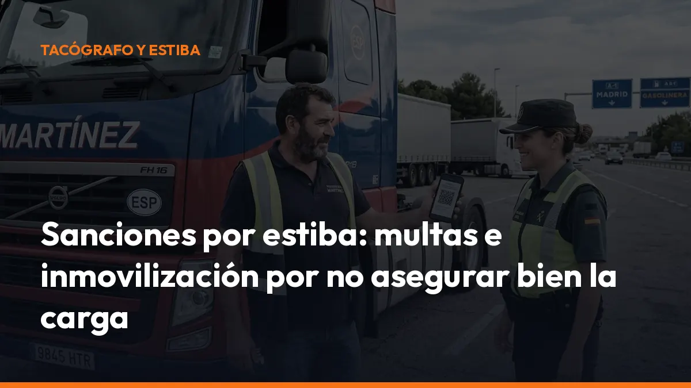

Sanciones por estiba: multas e inmovilización por no asegurar bien la carga

En este artículo encontrarás las principales sanciones por estiba, quién puede responder y qué debes revisar antes de salir.
Importante: el importe final depende de la norma aplicada, la gravedad del riesgo, la autoridad competente y las circunstancias del caso. El RD 563/2017 establece los criterios técnicos de inspección, pero no fija por sí solo todas las cuantías económicas.
¿Qué se considera una mala estiba de la mercancía?
La estiba consiste en colocar, distribuir y sujetar la carga para evitar que se mueva durante el transporte.
La mercancía debe permanecer estable ante:
- Frenadas bruscas.
- Cambios de dirección.
- Curvas y rotondas.
- Arranques en pendiente.
- Vibraciones y baches.
- Maniobras de emergencia.
El RD 563/2017 permite inspeccionar la sujeción de la carga en carretera. El objetivo es comprobar que los bultos no se desplazan, no salen del espacio de carga y no suponen un peligro para la circulación.
En la práctica, los agentes pueden revisar:
- Estado de las cinchas.
- Cadenas, cables y tensores.
- Puntos de amarre.
- Separación entre bultos.
- Bloqueo contra paredes o teleros.
- Uso de alfombrillas antideslizantes.
- Protectores de aristas.
- Distribución del peso.
- Estado de la carrocería y del suelo.
En inspecciones más detalladas también pueden utilizar equipos de medición, incluidos tensiómetros digitales, para comprobar si la fuerza de amarre es suficiente.
TIPOS DE DEFICIENCIA: LEVE, GRAVE Y PELIGROSA
El anexo III del RD 563/2017 clasifica las deficiencias de la sujeción de la carga en tres niveles.
Deficiencia leve
La carga está correctamente sujeta, pero existen aspectos mejorables. Por ejemplo, una cincha con la etiqueta deteriorada o una protección de aristas que podría colocarse mejor.
Normalmente implica una recomendación o advertencia. Aun así, debes corregirlo antes de volver a cargar.
Deficiencia grave
La sujeción es insuficiente y existe posibilidad de desplazamiento, vuelco o caída parcial de la carga.
En este caso, no deberías continuar la ruta hasta subsanar la estiba. El agente puede prohibir la circulación y exigir que vuelvas a asegurar la mercancía.
Deficiencia peligrosa
Existe un riesgo directo e inmediato para la seguridad vial. Es el caso de una carga totalmente suelta, un bulto con riesgo claro de caer a la calzada o una sujeción incapaz de soportar las fuerzas de circulación.
Aquí puede ordenarse la inmovilización inmediata del vehículo hasta que la carga quede correctamente reestibada.
¿Cuánto son las sanciones por estiba?
No existe una única multa aplicable a todos los casos. La cantidad depende de si se aplica la normativa de tráfico, transporte u otra regulación adicional.
Como referencia práctica, en el sector se manejan estos rangos según la gravedad y el expediente:
- Infracción leve: hasta 300 €.
- Infracción grave: entre 801 y 1.500 €.
- Infracción muy grave: entre 4.001 y 6.000 €.
- Incumplimientos especialmente graves de las normas de sujeción: desde 4.001 € o más, cuando concurren otras infracciones, riesgos o responsabilidades.
Estos importes deben interpretarse con cuidado. La Ley de Tráfico contempla, por ejemplo, una multa de 200 € por circular con la carga mal acondicionada o con peligro de caída. Si la carga ha caído a la vía y crea un grave peligro, la infracción puede alcanzar los 500 €.
Por otro lado, una inspección de transporte puede detectar otros incumplimientos asociados:
- Exceso de masa máxima autorizada.
- Sobrecarga por eje.
- Defectos en el vehículo.
- Incumplimientos de mercancías peligrosas.
- Falta de documentación.
- Incumplimiento de las instrucciones de carga.
Por eso, las sanciones estiba carga no deben analizarse únicamente mirando una cifra. La misma carga mal asegurada puede generar consecuencias diferentes dependiendo del riesgo y de las infracciones adicionales.
Consulta siempre el texto consolidado del RD 563/2017 en el BOE y la Ley de Tráfico y Seguridad Vial.
INMOVILIZACIÓN DEL CAMIÓN: EL COSTE NO TERMINA EN LA
MULTA
Cuando la deficiencia es peligrosa, el vehículo puede quedar detenido hasta que desaparezca el riesgo.
El artículo 12 del RD 563/2017 permite inmovilizar el vehículo en los casos previstos por la Ley de Tráfico. La medida se mantiene hasta que:
1. Se descarga o recoloca la mercancía. 2. Se sustituyen los elementos de amarre defectuosos. 3. Se bloquean los espacios libres. 4. Se protegen las aristas. 5. Se comprueba que la carga ya no puede desplazarse. 6. Se autoriza la continuación del viaje.
Además, puedes asumir:
- Gastos de grúa.
- Traslado a una zona segura.
- Depósito del vehículo.
- Nueva inspección.
- Mano de obra para reestibar.
- Retrasos en la entrega.
- Penalizaciones del cliente.
- Daños en la mercancía.
El propio RD 563/2017 establece que, cuando la deficiencia constituye una infracción, los gastos de inspección, inmovilización, traslado y depósito pueden correr a cargo del titular o arrendatario a largo plazo del vehículo.
Una cincha barata puede evitar una parada de varias horas y una factura mucho mayor.
CASOS REALES HABITUALES EN LOS CONTROLES DE CAR-
RETERA
Estos son algunos de los supuestos que se repiten en las inspecciones de vehículos comerciales.
Bultos separados de la pared frontal
Cuando existe demasiado espacio entre la carga y la pared frontal, los bultos pueden desplazarse durante una frenada. Si el hueco supera los límites de seguridad o la carga puede atravesar la pared, la deficiencia puede calificarse como grave o peligrosa.
Cinchas sin tensión suficiente
Una cincha colocada, pero sin tensión adecuada, no garantiza la sujeción. Los inspectores pueden comprobar visualmente el amarre y, cuando proceda, medir la fuerza de tensión.
Llevar muchas cinchas no sirve si están mal colocadas o no soportan la fuerza necesaria.
Carga totalmente suelta
Es uno de los casos más graves. Una mercancía sin ningún sistema efectivo de retención puede provocar una deficiencia peligrosa, la prohibición de continuar y la inmovilización inmediata.
Elementos de amarre deteriorados
Cintas cortadas, carracas oxidadas, cadenas deformadas o puntos de amarre dañados reducen la capacidad de sujeción. Si el equipo no puede soportar las fuerzas exigidas, debes sustituirlo antes de iniciar la ruta.
¿QUIÉN RESPONDE POR LA MALA ESTIBA?
La responsabilidad no recae automáticamente siempre en el conductor.
La Ley 15/2009, del contrato de transporte terrestre de mercancías, establece que las operaciones de estiba son, por regla general, responsabilidad del cargador, salvo que el porteador las asuma expresamente.
En términos prácticos:
- Cargador: responde normalmente de la carga y la estiba que le corresponden.
- Transportista: responde cuando ha asumido expresamente la estiba o cuando realiza esa operación.
- Porteador: responde en servicios de paquetería y pequeños envíos en los términos previstos legalmente.
- Conductor: debe comprobar que el vehículo puede circular con seguridad y comunicar deficiencias evidentes.
- Titular del vehículo: debe mantener el vehículo en condiciones aptas para circular.
Si el cargador ha realizado la estiba siguiendo instrucciones del porteador, pueden existir responsabilidades adicionales para el transportista. Por eso es importante dejar constancia escrita de quién carga, quién estiba y qué reservas formula el conductor.
CHECKLIST ANTES DE SALIR: EVITA LAS SANCIONES EN
TRANSPORTE
Haz esta comprobación antes de abandonar el muelle o almacén:
- Distribución: reparte el peso sin superar la masa máxima autorizada ni las cargas por eje.
- Bloqueo: elimina los espacios libres con separadores, calzos o elementos adecuados.
- Amarre: utiliza el número suficiente de cinchas, cadenas o cables.
- Tensión: comprueba que los amarres tienen la tensión necesaria.
- Aristas: coloca protectores para evitar cortes y daños en las cinchas.
- Puntos de anclaje: verifica que están en buen estado y bien fijados.
- Carrocería: revisa paredes, teleros, suelo, puertas y cierres.
- Embalaje: confirma que los bultos pueden soportar el transporte.
- Documentación: conserva la carta de porte y las instrucciones de carga.
- Revisión final: vuelve a comprobar la carga después de los primeros kilómetros.
Si detectas un problema, detente en un lugar seguro y corrígelo. No esperes al control.
DOCUMENTA LA OPERACIÓN Y REDUCE RIESGOS
Una fotografía de la carga antes de cerrar el vehículo puede ayudarte a demostrar cómo salió la mercancía. También conviene registrar:
- Fecha y hora de la carga.
- Matrícula del vehículo.
- Identificación del cargador.
- Observaciones del conductor.
- Reservas en la carta de porte.
- Elementos de sujeción utilizados.
Con Mi Carga puedes crear y gestionar documentación digital del transporte desde el móvil. Lleva la información organizada, accede a ella en carretera y reduce el riesgo de perder documentos durante una inspección.
Activa tu cuenta desde la página de suscripción. Los 10 portes de prueba no caducan y los planes incluyen portés ilimitados, modo sin conexión y trazabilidad ROTT.
CONCLUSIÓN: ASEGURA LA CARGA ANTES DE QUE TE PAREN
Las sanciones por estiba pueden empezar con una deficiencia aparentemente pequeña y terminar en una inmovilización, un retraso y una reclamación económica.
La clave es sencilla:
- Reparte bien la carga.
- Utiliza amarres adecuados.
- Comprueba la tensión.
- Deja constancia de las reservas.
- Revisa la mercancía antes de salir.
- Lleva la documentación disponible al instante.
No arriesgues una ruta completa por no revisar la carga durante cinco minutos.
Empieza hoy con Mi Carga y mantén tus documentos de transporte controlados desde el móvil. Activa tu suscripción o solicita información. ¿Hablamos?
Preguntas frecuentes sobre las sanciones por estiba
¿Cuál es la multa por llevar la carga mal estibada?
La cuantía depende de la norma aplicada y de la gravedad. Como referencia, la Ley de Tráfico contempla 200 € por circular con la carga mal acondicionada o con peligro de caída y 500 € si la carga cae a la vía creando un grave peligro. En expedientes sectoriales pueden aparecer rangos superiores.
¿Pueden inmovilizar el camión por una mala estiba?
Sí. Cuando la carga presenta un riesgo especialmente grave o directo para la seguridad vial, los agentes pueden inmovilizar el vehículo hasta que se reestibe y desaparezca el peligro.
¿Quién es responsable de la estiba: el cargador o el transportista?
Por regla general, la estiba corresponde al cargador, salvo pacto expreso o cuando el porteador asume la operación. En paquetería y pequeños envíos existen reglas específicas.
¿Qué norma regula las inspecciones de estiba?
El RD 563/2017 regula las inspecciones técnicas en carretera y su anexo III establece los principios y métodos de inspección de la sujeción de la carga.
¿Puedo continuar si el agente detecta una deficiencia grave?
Como norma general, debes corregir la deficiencia antes de continuar. Si el riesgo es especialmente grave, el vehículo puede quedar inmovilizado.
Genera tus 10 primeros documentos gratis con Mi Carga
DeCA, carta de porte y ADR, en PDF, con QR y archivo automático en la nube.
Empezar con 10 documentos gratisArtículo informativo. Consulta siempre el caso concreto de tu operación. ¿Dudas? Escríbenos.